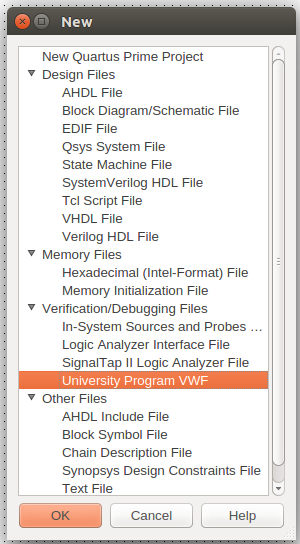
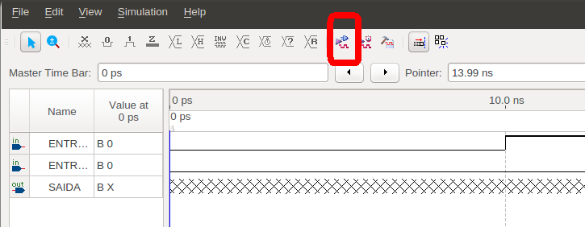

Para simular o circuito, crie uma nova simulação:
- Menu File:
- New:
- Verification/Debug Files:
- University Program VWF;
- OK.

- Abrirá uma nova tela com o simulador:
- Simulation Waveform Editor.
Selecione os sinais do circuito que deseja ver na simulação:
- Menu Edit:
- Na tela de 'Insert Node or Bus':
- Na tela de 'Node Finder':
- Clique em List:
- Escolha os sinais para simular;
- OK.
- OK.
Crie os estímulos (sinais) de entrada para a simulação:
- Selecione a primeira entrada no seu ícone 'In':
- Selecione o ícone de 'Count Value':
- Em 'Transitions occour', digite 10 e escolha a unidade de “ns” (nanosegundos).
- OK.
- Faça o mesmo para a segunda entrada e escolha 20 ns.
- Note que foi criada a sequência binária da tabela da verdade.
- Salve a sua simulação.
Ajuste a janela de tempo para simulação:
- Caso queira diminuir a janela de tempo mostrada:
Execute a simulação funcional:
- Clique no ícone:
- Run Functional Simulation.

- Caso não haja erros, deverá aparecer uma nova tela com a simulação.
- Verifique se o resultado é coerente com a tabela da verdade dessa porta.
Ir para o início do documento.